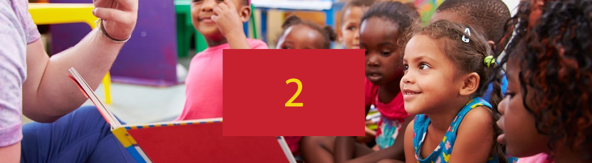
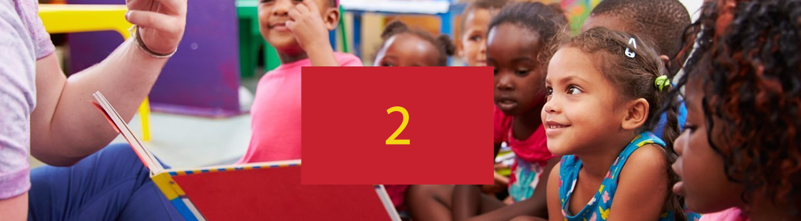
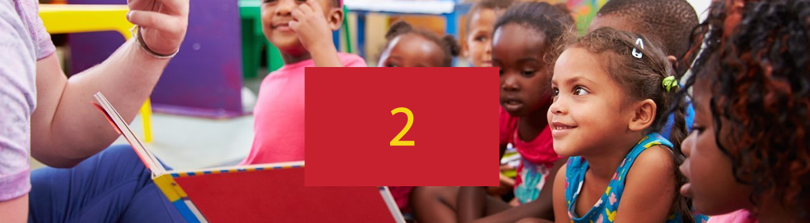
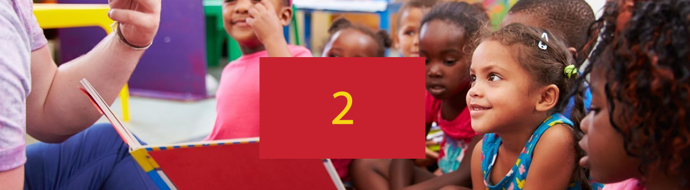

Depois de cinco anos de intensos debates entre a comunidade educacional e pressão de organizações de direitos humanos, agora o Fundo de Manutenção e Desenvolvimento da Educação Básica e Valorização dos Profissionais da Educação (Fundeb), que financia a educação básica brasileira – da educação infantil ao ensino médio -, passa a integrar a Constituição Federal de maneira permanente. A vitória garante ainda mais recursos para creches e escolas públicas, e é um passo importante rumo à superação das desigualdades educacionais no país.
Além de seu caráter permanente, o fundo passa a contar com mais verba da União para o financiamento da educação. A complementação de verbas federais sobre o valor total arrecadado por estados e municípios que é de 10% será ampliada gradualmente até atingir 23% a partir de 2026. Hoje, o Fundeb representa 63% do investimento público em educação básica. Em 2019, os recursos do Fundeb chegaram a R$ 166,6 bilhões.
Os graves problemas da Educação brasileira não terminam na sala de aula. É fora dela que suas lacunas se manifestam com toda força, minando o desenvolvimento do País. Quando essa ficha caiu para a Federação das Indústrias do Estado de Santa Catarina – FIESC em 2012, a instituição soube que não havia tempo a perder: era hora de movimentar o mercado. O compromisso da organização em mudar essa realidade se concretizou na fundação do Movimento Indústria pela Educação naquele ano que, mais tarde, com a inclusão de muitos colaboradores passaria a se chamar Santa Catarina pela Educação.